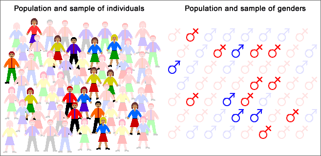
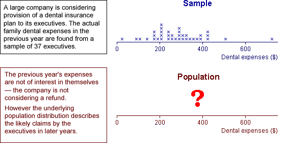
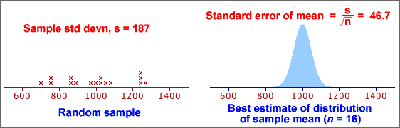
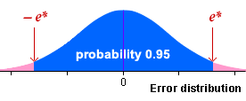

If you don't want to print now,
Population and census
We often want to find information about a particular group of individuals (people, fields, trees, bottles of beer or some other collection of items). This target group is called the population.
Collecting measurements from every item in the population is called a census. A census is rarely feasible, because of the cost and time involved.
Simple random sample
We can usually obtain sufficiently accurate information by only collecting information from a selection of units from the population — a sample. Although a sample gives less accurate information than a census, the savings in cost and time often outweigh this.
The simplest way to select a representative sample is a simple random sample. In it, each unit has the same chance of being selected and some random mechanism is used to determine whether any particular unit is included in the sample.
Sampling from a population of values
It is convenient to define the population and sample to be sets of values (rather than people or other items). This abstraction — a population of values and a corresponding sample of values — can be applied to a wide range of applications.

Variability
Sampling from a population results in sample-to-sample variability in the information that we obtain from the samples.
Sample information about the population
In practice, we only have a single sample and this provides incomplete information about the population.

Effect of sample size
Bigger samples mean more stable and reliable information about the underlying population.
Estimating means and proportions
A random sample is often used to estimate some numerical characteristic of the population, such as...
The difference between an estimate and the population value being estimated is called its sampling error.

Selecting a sample manually (raffle tickets)
This method is rarely used in research applications.
Selecting a sample with random numbers
To select a random sample without replacement using random numbers,
Random number between 0 and k
The easiest way to generate a random number between 0 and 357 is to use a spreadsheet such as Excel — it has a function designed for this purpose, "=RANDBETWEEN(0, 357)". A computer-generated random value is strictly called a pseudo-random number.
If a computer is not available, a sequence of random digits can be generated:
 Roll a 10-sided
die several times.
Roll a 10-sided
die several times.A random number that is equally likely to have any value between 0 and 357 can be found by repeatedly generating 3-digit numbers (between 0 and 999) until a value between 0 and 357 is obtained.
Generalising from data
Most data sets do not arise from randomly sampling individuals from a finite population. However we are still rarely interested in the specific individuals from whom data were collected.
The recorded data are often 'representative' of something more general.
The main aim is to generalise from the data.

Randomness of data
Not only do we usually have little interest in the specific individuals from whom data were collected, but we must also acknowledge that our data would have been different if, by chance, we had selected different individuals or even made our measurements at a different time.
We must acknowledge this sample-to-sample variability when interpreting the data. The data are random.
All graphical and numerical summaries would be different if we repeated data collection.
This randomness in the data must be taken into account when we interpret graphical and numerical summaries. Our conclusions should not be dependent on features that are specific to our particular data but would (probably) be different if the data were collected again.
The more data that we collect, the more accurately our data will reflect population characteristics, but randomness always exists.
Data that are not sampled from a finite population
There is no real finite population underlying most data sets from which the values can be treated as being sampled. The randomness in such data must be explained in a different way.
Sampling from an abstract population
"Random sampling from a population" is also used to explain variability even when there is no real finite population from which the data were sampled.
We imagine an abstract population of all values that might have been obtained if the data collection had been repeated. We can then treat the observed data as a random sample from this abstract population.
Defining such an underlying population therefore not only explains sample-to-sample variability but also gives us a focus for generalising from our specific data.
Distributions
When an abstract population is imagined to underlie a data set, it often contains an infinite number of values. For example, consider the lifetimes of a sample of light bulbs. The population of possible failure times contains all values greater than zero, and this includes an infinite number of values. Moreover, some of these possible values will be more likely than others.
This kind of underlying population is called a distribution.
Positions of cow in a field
Consider the positions of a cow in a field at 6 different times where all locations are equally likely.

The population here contains all possible positions and is therefore infinite.
The idea of a distribution also allows for some possible values to be more likely than others — the cow may be more likely to be in some particular part of the field.
Sampling from a population
Sampling from an underlying population (whether finite or infinite) gives us a mechanism to explain the randomness of data. The underlying population also gives us a focus for generalising from our sample data — the distribution of values in the population is fixed and does not depend on the specific sample data.
Unknown population
Unfortunately the population underlying most data sets is unknown and, in practice, we only have a single sample. However this single sample does throw light on the population distribution.
The diagram below describes a sample from a categorical distribution. Although the underlying population is unknown, the sample proportion of successes, p, is an estimate of the unknown proportions of successes in the population (denoted by π).

Normal distribution parameters
The family of normal distributions consists of symmetric bell-shaped distributions that are defined by two parameters, µ and σ, the distribution's mean and standard deviation.
Normal distributions as models for data

The sample data rarely gives enough information for us to be sure that the underlying population is normal, but a normal model is often used unless there is obvious non-normality in the data.
Even if the sample data are obviously skew, a normal distribution may be a reasonable model for a nonlinear transformation of the values (e.g. a log transformation).
Distribution of summary statistics
A more important reason for the importance of the normal distribution in statistics is that...
Many summary statistics have normal distributions (at least approximately).
The Central Limit Theorem shows that the mean of a random sample has a distribution that is close to normal when the sample size is moderate or large, irrespective of the shape of the distribution of the individual values. The following are also approximately normal when the sample size is moderate or large...
Effect of normal parameters on distribution
Distributions from the normal family have different locations and spreads, but other aspects of their shape are the same. Indeed, if the scales on the horizontal and vertical axes are suitably chosen, ...

A common diagram for all normal distributions
All normal distributions have basically the same shape.
This should allow you to sketch a normal distribution, given any values of µ and σ.

Some probabilities for normal distributions

A more precise version of the middle probability is
70-95-100 rule of thumb and the normal distribution
These probabilities are the basis of the 70-95-100 rule of thumb for 'bell-shaped' data sets.
Sampling mechanism
The mechanism of sampling from a population explains randomness in data.

In practice, we must use a single sample to find information about the population.

Parameters and statistics
We usually focus attention on a small number of numerical characteristics.

Variability of sample statistics
The variability in random samples also implies sample-to-sample variability in sample statistics.

Distribution of the sample mean
The mean of a random sample of n values is a random quantity. Its distribution is centred on the population mean but its spread is lower then that of the population distribution.
Centre and spread of the sample mean's distribution
We can be more precise. If the population has mean µ and standard deviation σ, then the mean of a sample of n values,  ,
has a distribution with mean and standard deviation:
,
has a distribution with mean and standard deviation:
 = μ
= μ
 =
= 
Shape of the mean's distribution
Whatever the shape of the population distribution,
 = μ
= μ  =
= 
However skewness in the population distribution leads to some skewness in the distribution of the mean.
Samples from normal populations
When the population distribution is normal, the sample mean also has a normal distribution.
 ~ normal (μ ,
~ normal (μ ,  )
)

Means from non-normal populations
Irrespective of the shape of the population distribution,
 = μ
= μ  =
= 
If the population is not a normal distribution, the sample mean does not have a normal distribution. However the Central Limit Theorem states that...
For most non-normal population distributions, the distribution of the sample mean becomes close to normal when the sample size increases.

Inference about a population
Data are usually collected to provide information about some population or process underlying the data. The data are often modelled as a random sample from this population.

More generally, inference is applicable to any situation where data are obtained through a random mechanism. We may understand some aspects of the process that generated the data (our model for the data-collection process), but other aspects of this process must usually be estimated from data that have been collected — inference.
Estimating parameters
Because of the limited amount of sample data available, we usually restrict attention to a few specific numerical characteristics of the population distribution — parameters.
After identifying the population parameters that are of most interest — for example the distribution's mean, µ, or the proportion of values in a category, π, — we can usually estimate these values using the corresponding summary statistics from the sample. This is called inference about the parameter.
Using an estimate of σ
The error distribution for a sample mean has:
error = μerror = 0
standard error = σerror = 
In practice, the value of σ is usually unknown and must be replaced by the sample standard deviation, s, in the formula:
standard error = σerror = 
Example

Difference between standard error and standard deviation
The standard deviation of a sample mean is closely related to the population's standard deviation:
 =
= 
For example,

There is a similar relationship between the standard deviation of a sample and the standard error of the mean. Do not confuse them:

Common mistakes in interpretation
Warning
Be particularly careful when reading journal articles. Some papers use standard deviations (SD) to describe the distribution of variables, but others give the standard errors (SE) of the means of the variables.
95% bounds on the error
If we know the error distribution of an estimator (or an approximation to it), we can find a range of values within which the error will lie with probability 0.95,

Expressed in an equation,
Prob ( -e* < error < e* ) = 0.95
95% confidence interval
Since the error is the difference between the estimator and the unknown parameter, this can be rewritten as:
Prob ( estimate - e* < parameter < estimate + e* ) = 0.95
The interval
estimate - e* to estimate + e*
is called a 95% confidence interval and we have 95% confidence that it will include the unknown parameter value.
Confidence interval from standard error
The 70-95-100 rule of thumb states that about 95% of values in most distributions are within 2 standard deviations of the mean. For unbiased estimators (with zero mean), we therefore have the approximation:

This leads to the approximate 95% confidence interval
estimate - 2 s.e. to estimate + 2 s.e.
Since the standard error of most commonly used estimators can be readily found by either a formula or statistical software, a 95% confidence interval can be easily found for most estimators.
Refinements
If we can only find an approximation to the error distribution, the method above would only give an approximate 95% confidence interval. The '± 2 s.e.' approximation is a useful guide in most circumstances, but we will refine this type of confidence interval for some estimators to make the confidence level closer to 95%.
Unknown population standard deviation
If we know the value of the population standard deviation, σ, an interval estimate of the form

has a confidence level of 0.95 — i.e. it is a 95% confidence interval.
In practice however, the value of σ is rarely known.
It is tempting to simply replace σ in the formula by its sample equivalent, s.

However replacing σ with s makes the confidence interval more variable and this means that it is less likely include µ — the confidence level is less than 95%. If the sample size, n, is large, the confidence level is close to 95%, but with smaller sample sizes the true confidence level can be much less than the target 95%. For example,
The confidence interval must be modified if σ is unknown.
Confidence interval using a t-value
The interval estimate

has a lower confidence level than 95%. In order to achieve a 95% confidence level, the interval must be widened. This is done by replacing 1.96 by a slightly larger number:

The replacement constant tn-1 is a value greater than 1.96 that depends on the sample size, n. The value n - 1 is called the degrees of freedom of the constant.
For any number of degrees of freedom, the t-value can be obtained from a table, graph or computer software.
Simulation of properties
The diagram below shows results from a simulation of 100 samples, each of size n = 20, from a normal population. We now treat the population standard deviation, s, as being unknown and find a 95% confidence interval for µ from each sample using the formula

where t19 = 2.093.

Approximately 95% of these confidence intervals include the actual parameter value, µ = 12. If more simulations had been conducted, the proportion of intervals including µ would have been closer to 95%.
Note that the confidence intervals in the simulation do not all have the same width since the CI width depends on s and that varies from sample to sample.
Interpretation of a confidence interval
In practice we only have a single sample (and a single confidence interval). We do not know whether it actually includes the unknown population mean, but knowing that confidence intervals obtained in this way will usually include µ is very helpful. In practice,...
Being right most of the time is the best one can hope for, since there is always the possibility of being misled by an unlucky sample.
The method that we use to obtain the confidence interval has probability 0.95 of including µ. We cannot tell whether the single interval that we evaluate from our data set is one of these 'lucky' intervals, but knowing that the method works so often gives us 95% confidence in it.